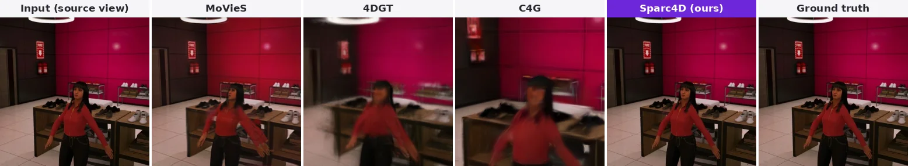
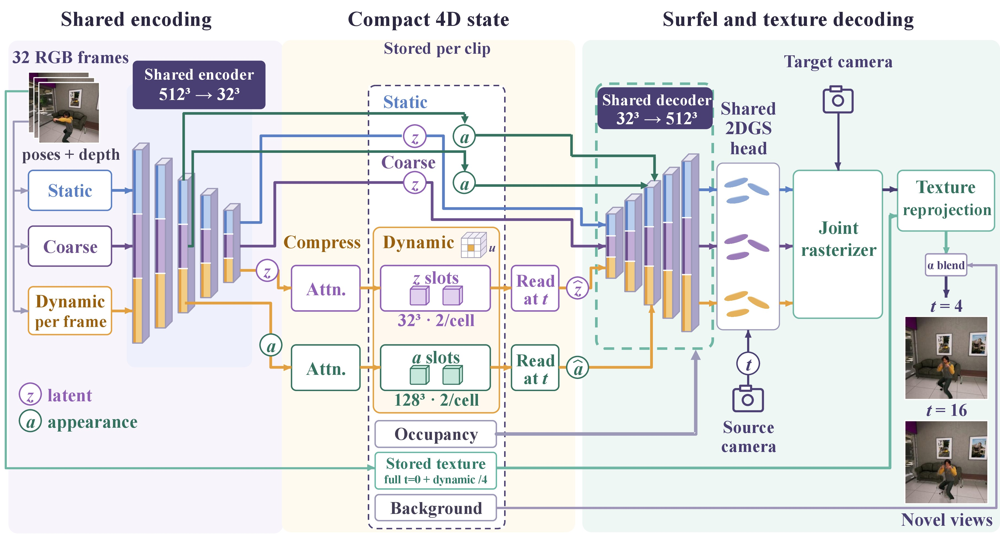
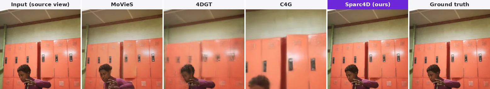
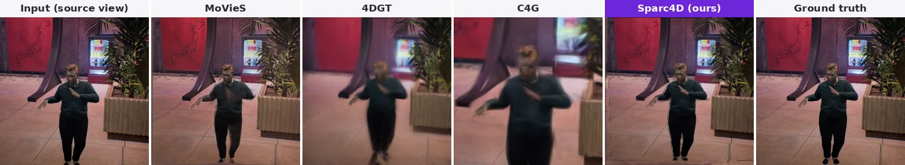
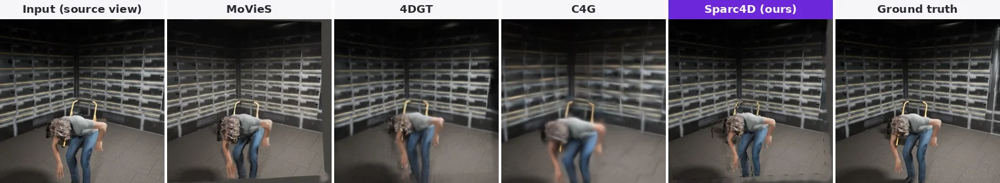
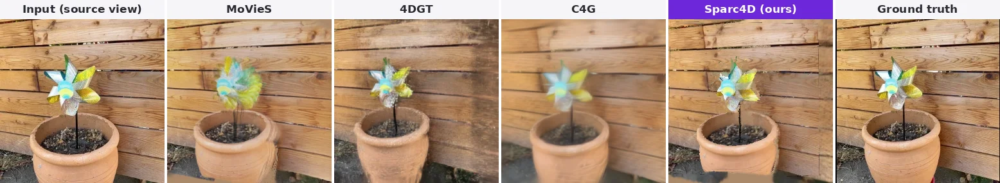
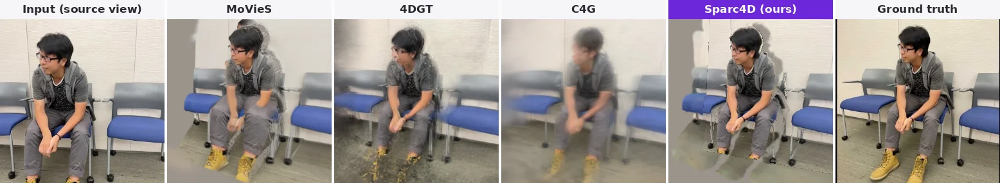
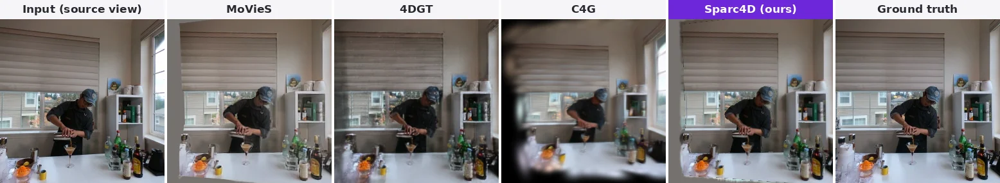
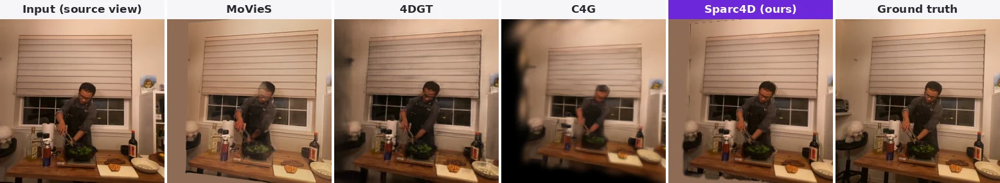
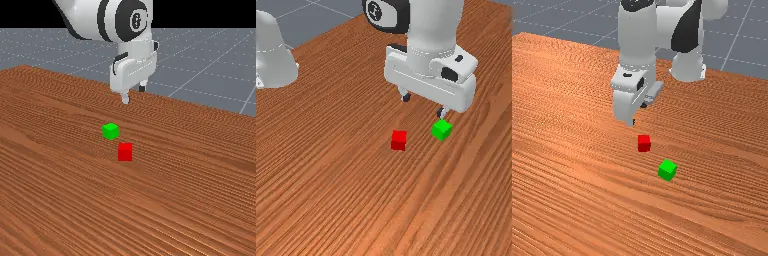

We present Sparc4D, a feed-forward autoencoder that encodes a monocular video with known cameras into a compact explicit 4D scene state. Static features are shared across the clip, while spatially anchored temporal slots compress the time-varying features. Fine-grid appearance codes and sparse source texture preserve spatial detail alongside this temporal bottleneck. Temporal slots use a median 5.0× fewer values than per-frame storage of time-varying features, with negligible change in novel-view quality. A sparse decoder reconstructs 2D Gaussian surfels that provide geometry for rendering and source-texture reprojection. The complete state includes learned features, sparse occupancy, one full source frame and dynamic-region pixels sampled every fourth frame. On random MultiCamVideo windows, it averages 0.67M 32-bit-equivalent values per 32-frame clip. At this size, it retains novel-view quality comparable to MoVieS and higher PSNR than MCV-fine-tuned C4G. Training on synthetic scenes also supports zero-shot reconstruction on DyCheck and Neu3D. After domain adaptation, the frozen encoder supports a ManiSkill3 StackCube policy with 81.3% success from 1,000 demonstrations.

Estimated depth lifts each frame into sparse 3D observations. Static, coarse and dynamic layers are voxelized and passed through one shared sparse encoder.
Static and coarse codes are kept once per clip. At each occupied cell, attention pools the per-frame dynamic codes into two temporal slots. Sparse occupancy and source pixels complete the state.
A query (cell, time) reads the slots back. The sparse decoder follows the stored occupancy and outputs 2D Gaussian surfels. Their rendered depth reprojects the stored texture into the target view.
Every animation plays one 32-frame clip. The leftmost column is the input camera at time t. The other columns are rendered from a held-out camera at the same time, and the rightmost column is that camera's real frame. Hold Z and hover over an animation to magnify it.



MultiCamVideo test clips. These are the paper's qualitative cases, chosen near the median per-clip PSNR difference between Sparc4D and MoVieS, so they are typical rather than best cases.


DyCheck iPhone sequences. Sparc4D is trained only on synthetic MultiCamVideo scenes; no method is fine-tuned on DyCheck. The input is the hand-held camera and the target is a fixed camera. Timestamps where the target camera has no frame are skipped. These cases were selected to show visible strengths.


Neu3D multi-view sequences, zero-shot. One camera is the input and another camera is the target. These cases were selected to show visible strengths.
| MultiCamVideo (random windows) | Trained on MCV | #Floats | PSNR↑ | SSIM↑ | LPIPS↓ |
|---|---|---|---|---|---|
| MoVieS | – | 719M | 17.26 | 0.512 | 0.366 |
| 4DGT | – | 26.9M | 14.35 | 0.403 | 0.550 |
| C4G | – | 0.92M | 13.64 | 0.369 | 0.596 |
| C4G | ✓ | 0.92M | 16.51 | 0.466 | 0.584 |
| Sparc4D | ✓ | 0.67M | 17.39 | 0.519 | 0.370 |
| Zero-shot | Training data | DyCheck | Neu3D (9 targets) | ||||
|---|---|---|---|---|---|---|---|
| mPSNR↑ | mSSIM↑ | mLPIPS↓ | PSNR↑ | SSIM↑ | LPIPS↓ | ||
| MoVieS | 8 public datasets | 13.95 | 0.345 | 0.488 | 15.61 | 0.445 | 0.304 |
| 4DGT | ~300 h real video | 11.84 | 0.277 | 0.599 | 17.33 | 0.530 | 0.281 |
| C4G | Spring, Kubric, RE10K | 13.52 | 0.351 | 0.634 | 11.78 | 0.285 | 0.588 |
| C4G (MCV fine-tuned) | + MultiCamVideo | 13.34 | 0.340 | 0.747 | 15.75 | 0.443 | 0.579 |
| Sparc4D | MultiCamVideo (synthetic) | 13.82 | 0.323 | 0.543 | 16.57 | 0.465 | 0.291 |
Best in bold, second best underlined. #Floats counts the per-clip state; shared network weights are excluded. Full protocols are in the paper.

After domain adaptation, we freeze the Sparc4D encoder and train a policy on its scene features in ManiSkill3 StackCube, where the robot grasps the red cube and stacks it on the green cube.
With 1,000 demonstrations the policy succeeds in 81.3% of episodes; with 3,000 demonstrations it reaches 84.0%.
A successful rollout of the 1,000-demonstration policy, shown from three cameras.
@article{yang2026sparc4d,
title = {Sparc4D: A Compact Explicit 4D Representation for Dynamic Scenes},
author = {Yang, Di and Li, Zhihao and Xiong, Yanhai and Wang, Yufei},
journal = {arXiv preprint arXiv:2610.01229},
year = {2026}
}